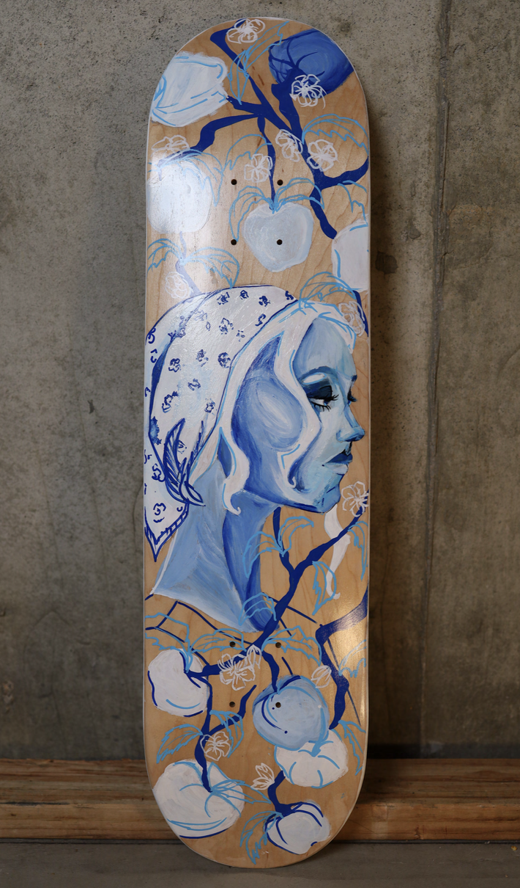
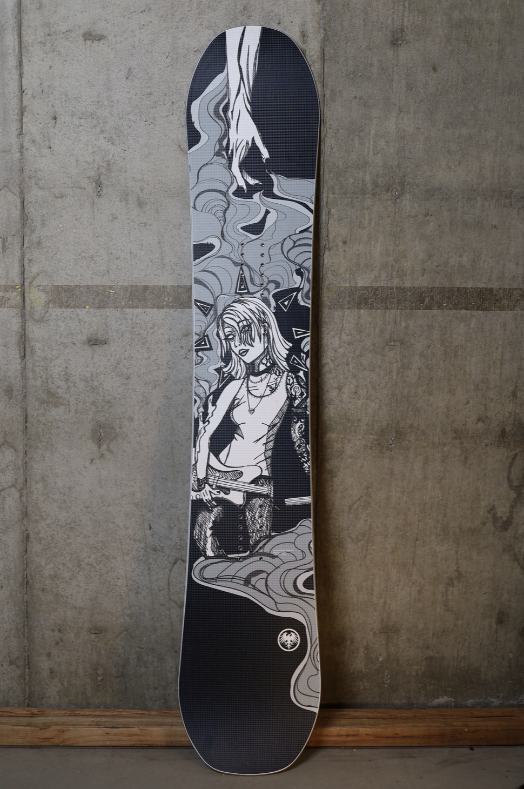

Start of my time at Warren Tech Techincal school for graphic design
First year participated in AP art, won my first top 10 spot in Never Summers snowboard comp and gained my Adobe Illustrator Certification.
First year participated in AP art, won my first top 10 spot in Never Summers snowboard comp and gained my Adobe Illustrator Certification.
With my last year I earned colledge credit with my AP art program, Won top 10 for the second year with Never summers snowboard comp and won the social media favorite. Also painted a mural for the program and donated one of my board to be displayed.
Worked twice a week for 4 months gaining real work experience and at the end of my internship did an art show with other interns and created a mural to celebrate our time.
Graduated with my Adobe Photoshop and Indesign certification and my high school diploma and move on to CU Denver
Started my freshman year with the digital design program at CU Denver and worked part time with SNOBAHN as a ski instructor and teaches up to level 5 ski and 2 snowboard and have now been there for 2 and half years.
Started working in more motion design and after effects. Within that time I also started working with oil painting and have continued to have my own collection that is growing.
Worked for 4 months on a working holiday visa will also completing Junior year of colledge
Graduated with my Bachlors degree in digital design

